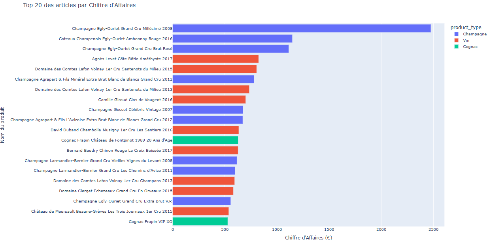

Optimisez la gestion des données d'une boutique — BottleNeck

De quoi s'agit-il ?
Mission réalisée pour BottleNeck, marchand de vin, dont les outils de suivi étaient encore artisanaux : trois sources de données disjointes (extraction ERP, extraction du site web, table de liaison entre les deux systèmes dont les références ne correspondaient pas) rendaient l'analyse et la gestion des stocks très difficiles. Le manager attendait un double livrable : une base de données consolidée et fiabilisée, et une analyse complète (CA, stocks, marges) restituée en 15 minutes devant le comité de direction — avec un accent particulier sur la formalisation des erreurs trouvées, ce rapport devant servir de point de départ à un futur projet de data visualisation.
Sur quoi je me suis appuyé
- Source : 3 fichiers à rapprocher — export ERP (référence produit, prix, état du stock), export du site web (SKU, quantités vendues, description produit), et une table de liaison entre les deux référentiels, mise à jour par un stagiaire.
- Période : extraction au 31 octobre, ventes couvrant le 1ᵉʳ au 31 octobre.
- Qualité : de nombreuses incohérences à traiter avant fusion — doublons sur la colonne de liaison
id_web(dus à des valeurs vides comptées comme identiques par défaut), formats de SKU incohérents entre les 3 sources, valeurs manquantes à traiter avant même de pouvoir vérifier les doublons.
Comment j'ai procédé
- Analyse exploratoire indépendante de chacune des 3 sources avant fusion, pour identifier les anomalies propres à chaque système (erreurs de saisie, de type, de calcul, de jointure).
- Nettoyage ciblé de la variable SKU, identifiée comme le point de friction principal — formats incohérents entre l'export web et l'ERP, nécessitant plusieurs passes de nettoyage successives.
- Fusion des 3 tables sur des clés choisies et justifiées, avec vigilance particulière sur les doublons de la table de liaison.
- Détection des valeurs aberrantes sur le prix par deux méthodes complémentaires : Z-score (seuil à 3 écarts-types) et écart interquartile (IQR), avec visualisation en boxplot pour objectiver la décision de conserver ou corriger chaque valeur.
- Calcul des indicateurs métier demandés : chiffre d'affaires par produit et total, analyse Pareto (20/80) sur les ventes et le CA, taux de marge par catégorie, rotation des stocks en mois de couverture.
- Analyse de corrélation entre variables quantitatives (prix, stock, ventes, marge) pour dégager des enseignements transversaux.
Ce que ça a produit
- CA total du mois d'octobre : 143 680,10 €, avec une forte présence du champagne dans le top 20 des meilleures ventes.
- Effet Pareto confirmé : 60,78 % des références génèrent 80 % du CA, et 60,64 % des références représentent 80 % des volumes écoulés.
- Plus de 5 700 bouteilles vendues sur le mois, pour un stock total de 16 740 bouteilles (494 637,90 €) — avec une présence massive de champagne dans le top 20 des flops (18 références sur 20), signal à confirmer sur une période plus longue qu'un seul mois.
- 31 références identifiées comme outliers de prix (seuil IQR à 84,09 €), dont 13 avec un Z-score supérieur à 3 (seuil à 115,12 €) — nécessitant une vérification manuelle de la stratégie de prix.
- Les alcools forts affichent un taux de marge nettement supérieur aux autres catégories — recommandation de développer prioritairement leur CA.
- Corrélations dégagées : plus le stock est élevé, plus les ventes le sont aussi ; en revanche plus le prix est élevé, moins le produit se vend ; aucune relation claire entre stock et prix.
- Recommandations livrées : sécuriser le stock des tops, écouler celui des flops pour libérer de l'espace, analyser les causes du surstock sur les flops, et calculer le bénéfice généré par article/catégorie (au-delà du seul CA).
Ce que je ferais différemment
- L'analyse porte sur un seul mois de données (octobre) — les catégories identifiées comme "flops" nécessitent une observation sur une période plus longue avant d'être confirmées comme telles.
- Le traitement de la variable SKU et des doublons issus de l'extraction web a été la partie la plus difficile du projet — un dictionnaire de données partagé entre l'ERP et le site web, avec des noms de colonnes harmonisés dès la source, éviterait une bonne partie de ce travail de réconciliation en aval.
- Le contrôle de la qualité des données a été fait de façon largement manuelle. Une évolution naturelle serait d'automatiser ces vérifications via des scripts Python exécutés à chaque import — doublons, valeurs aberrantes ou manquantes — plutôt que de les revérifier à la main à chaque nouvelle livraison de données.
- Axes de montée en compétence identifiés : visualisations avancées avec Plotly Express, et statistiques plus poussées (heatmaps de corrélation, test du Chi²) pour aller au-delà des analyses univariées réalisées ici.